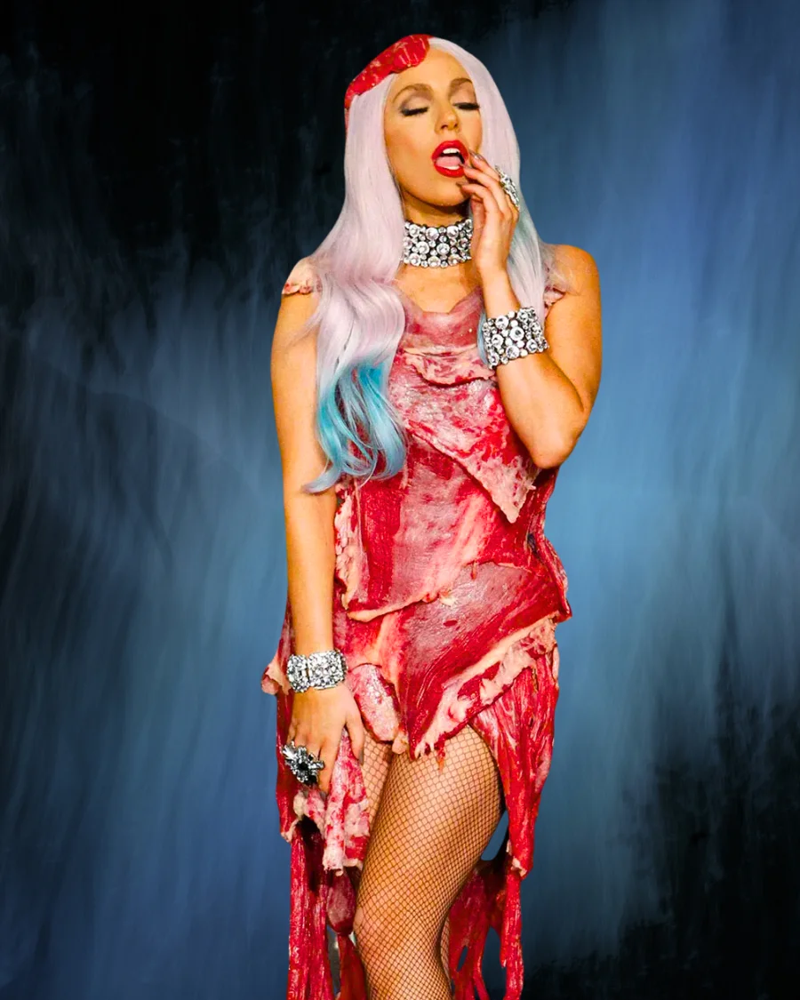

Vestido de carne
Diseñado por Franc Fernandez · MTV Video Music Awards, 2010

La historia detrás
En los MTV Video Music Awards de 2010, Lady Gaga se presentó con un vestido confeccionado íntegramente en carne cruda. Diseñado por Franc Fernandez y estilizado por Nicola Formichetti, el atuendo fue mucho más que un golpe de impacto visual.
Gaga lo definió como una declaración política: una protesta contra la política Don't Ask, Don't Tell que limitaba los derechos del personal LGBT en el ejército estadounidense. "Si no defendemos lo que creemos y luchamos por nuestros derechos, pronto vamos a tener tantos derechos como la carne que llevamos puesta", dijo en su momento.
Hoy el vestido se conserva — desecado y preservado como obra de arte — en el Rock and Roll Hall of Fame, símbolo de uno de los momentos más memorables de la cultura pop del siglo XXI.